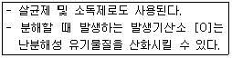
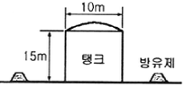
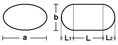
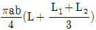
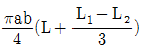
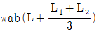
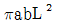
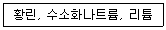

위험물기능사 (2011-07-31 기출문제)
1과목: 화재 예방과 소화방법
1. 고정식의 포소화설비의 기준에서 포헤드방식의 포 헤드는 방호대상물의 표면적 몇 m2 당 1개 이상의 헤드를 설치 하여야 하는가?
- 3
- 9
- 15
- 30
(정답률: 65%)

2. 지정수량의 100배 이상을 저장 또는 취급하는 옥내 저장소에 설치하여야 하는 경보설비는?(단, 고인화점 위험물만을 저장 또는 취급하는 것은 제외한다.)
- 비상경보설비
- 자동화재탐지설비
- 비상방송설비
- 확설장치
(정답률: 85%)
3. 위험물안전관리법령상 스프링클러헤드는 부착장소의 평상시 최고주위온도가 28℃ 미만인 경우 몇 ℃의 표시온도를 갖는 것을 설치하여야 하는가?
- 58 미만
- 58 이상 79 미만
- 79 이상 121 미만
- 121 이상 162 미만
(정답률: 53%)
4. 가연물이 되기 쉬운 조건이 아닌 것은?
- 산화반응의 활성이 크다.
- 표면적이 넓다.
- 활성화에너지가 크다.
- 열전도율이 낮다.
(정답률: 69%)
5. A, B, C급 화재에 모두 적응성이 있는 소화약제는?
- 제1종 분말소화약제
- 제2종 분말소화약제
- 제3종 분말소화약제
- 제4종 분말소화약제
(정답률: 87%)
6. 유기과산화물의 화재 시 적응성이 있는 소화설비는?
- 물분무소화설비
- 이산화탄소소화설비
- 할로겐화합물소화설비
- 분말소화설비
(정답률: 55%)
7. 주수소화가 적합하지 않은 물질은?
- 과산화벤조일
- 과산화나트륨
- 피크린산
- 염소산나트륨
(정답률: 62%)
8. 디에틸에테르의 저장 시 소량의 염화칼슘을 넣어 주는 목적은?
- 정전기 발생 방지
- 과산화물 생성 방지
- 저장용기의 부식방지
- 동결 방지
(정답률: 40%)
9. 소화난이도등급 Ⅱ 의 옥내탱크저장소에는 대형수동식 소화기 및 소형수동식소화기를 각각 몇 개 이상 설치하여야 하는가?
- 4
- 3
- 2
- 1
(정답률: 48%)
10. 제3류 위험물 중 금수성물질을 취급하는 제조소에 설치하는 주의사항 게시판의 내용과 색상으로 옳은 것은?
- 물기엄금 : 백색바탕에 청색문자
- 물기엄금 : 청색바탕에 백색문자
- 물기주의 : 백색바탕에 청색문자
- 물기주의 : 청색바탕에 백색문자
(정답률: 76%)
11. 폭발시 연소파의 전파속도 범위에 가장 가까운 것은?
- 0.1 ~ 10m/s
- 100 ~ 1000m/s
- 2000 ~ 3500m/s
- 5000 ~ 10000m/s
(정답률: 77%)
12. 제조소등의 완공검사신청서는 어디에 제출해야 하는가?
- 소방방재청장
- 소방방재청장 또는 시·도지사
- 소방방재청장, 소방서장 또는 한국소방산업기술원
- 시·도지사, 소방서장 또는 한국소방산업기술원
(정답률: 51%)
13. 대형수동식소화기의 설치기준은 방호대상물의 각부분으로 부터 하나의 대형수동식소화기까지의 보행 거리가 몇 m 이하가 되도록 설치하여야 하는가?
- 10
- 20
- 30
- 40
(정답률: 66%)
14. 산화열에 의한 발열이 자연발화의 주된 요인으로 작용하는 것은?
- 건성유
- 퇴비
- 목탄
- 셀룰로이드
(정답률: 46%)
15. 알코올류 20000L 에 대한 소화설비 설치 시 소요 단위는?
- 5
- 10
- 15
- 20
(정답률: 53%)
16. 연소범위에 대한 설명으로 옳지 않은 것은?
- 연소범위는 연소하한값부터 연소상한값까지 이다.
- 연소범위의 단위는 공기 또는 산소에 대한 가스의 % 농도이다.
- 연소하한이 낮을수록 위험이 크다.
- 온도가 높아지면 연소범위가 좁아진다.
(정답률: 68%)
17. 이산화탄소 소화기 사용시 줄·톰슨 효과에 의해서 생성되는 물질은?
- 포스겐
- 일산화탄소
- 드라이아이스
- 수성가스
(정답률: 82%)
18. 건축물 화재 시 성장기에서 최성기로 진행 될 때 실내온도가 급격히 상승하기 시작하면서 화염이 실내 전체로 급격히 확대되는 연소현상은?
- 슬롭오버 (Slop over)
- 플래시오버 (Flash over)
- 보일오버 (Boil over)
- 프로스오버 (Froth over)
(정답률: 81%)
19. B급 화재의 표시색상은?
- 청색
- 무색
- 황색
- 백색
(정답률: 86%)
20. 품명이 나머지 셋과 다른 것은?
- 산화프로필렌
- 아세톤
- 이황화탄소
- 디에틸에테르
(정답률: 62%)
2과목: 위험물의 화학적 성질 및 취급
21. 질산에 대한 설명으로 옳은 것은?
- 산화력은 없고 강한 환원력이 있다.
- 자체 연소성이 있다.
- 크산토프로테인 반응을 한다.
- 조연성과 부식성이 없다.
(정답률: 42%)
22. 제5류 위험물의 공통된 취급 방법이 아닌 것은?
- 용기의 파손 및 균열에 주의한다.
- 저장시 가열, 충격, 마찰을 피한다.
- 운반용기 외부에 주의사항으로 “자연발화주의”를 표기한다.
- 점화원 및 분해를 촉진시키는 물질로부터 멀리한다.
(정답률: 84%)
23. 과망간산칼륨의 성질에 대한 설명 중 옳은 것은?
- 강력한 산화제이다.
- 물에 녹아서 연한 분홍색을 나타낸다.
- 물에는 용해하나 에탄올에 불용이다.
- 묽은 황산과는 반응을 하지 않지만 진한 황산과 접촉하면 서서히 반응한다.
(정답률: 61%)
24. 제조소등의 관계인이 예방규정을 정하여야 하는 제조소등이 아닌 것은?
- 지정수량 100배의 위험물을 저장하는 옥외탱크저장소
- 지정수량 150배의 위험물을 저장하는 옥내저장소
- 지정수량 10배의 위험물을 취급하는 제조소
- 지정수량 5배의 위험물을 취급하는 이송취급소
(정답률: 54%)
25. 지정수량이 50킬로그램이 아닌 위험물은?
- 염소산나트륨
- 리튬
- 과산화나트륨
- 디에틸에테르
(정답률: 57%)
26. 수납하는 위험물에 따라 위험물의 운반용기 외부에 표시하는 주의사항이 잘못된 것은?
- 제1류 위험물 중 알칼리금속의 과산화물 : 화기·충격주의, 물기엄금, 가연물접촉주의
- 제4류 위험물 : 화기엄금
- 제3류 위험물 중 자연발화성물질 : 화기엄금, 공기접촉 엄금
- 제2류 위험물 중 철분 : 화기엄금
(정답률: 59%)
27. 알루미늄분에 대한 설명으로 옳지 않은 것은?
- 알칼리수용액에서 수소를 발생한다.
- 산과 반응하여 수소를 발생한다.
- 물보다 무겁다.
- 할로겐 원소와는 반응하지 않는다.
(정답률: 40%)
28. 액체 위험물의 운반용기 중 금속제 내장용기의 최대 용적은 몇 L인가?
- 5
- 10
- 20
- 30
(정답률: 33%)
29. 제4류 위험물의 일반적 성질이 아닌 것은?
- 대부분 유기화합물이다.
- 전기의 양도체로서 정전기 축적이 용이하다.
- 발생증기는 가연성이며 증기비중은 공기보다 무거운 것이 대부분이다.
- 모두 인화성 액체이다.
(정답률: 67%)
30. 적린의 위험성에 대한 설명으로 옳은 것은?
- 물과 반응하여 발화 및 폭발한다.
- 공기 중에 방치하면 자연발화한다.
- 염소산칼륨과 혼합하면 마찰에 의한 발화의 위험이 있다.
- 황린보다 불안정한다.
(정답률: 52%)
31. 지정수량 20배의 알코올류 옥외탱크저장소에 펌프실 외의 장소에 설치하는 펌프설비의 기준으로 틀린 것은?
- 펌프설비 주위에는 3m 이상이 공지를 보유한다.
- 펌프설비 그 직하의 지반면 주위에 높이 0.15m 이상의 턱을 만든다.
- 펌프설비 그 직하의 지반면의 최저부에는 집유설비를 만든다.
- 집유설비에는 위험물이 배수구에 유입되지 않도록 유분리장치를 만든다.
(정답률: 47%)
32. 알킬알루미늄의 저장 및 취급방법으로 옳은 것은?
- 용기는 완전 밀봉하고 CH4, C3H8등을 봉입한다.
- C6H6등의 희석제를 넣어 준다.
- 용기의 마개에 다수의 미세한 구멍을 뚫는다.
- 통기구가 달린 용기를 사용하여 압력상승을 방지한다.
(정답률: 50%)
33. 위험물제조소등에 설치하는 옥내소화전설비의 설치기준으로 옳은 것은?
- 옥내소화전은 건축물의 층마다 당해 층의 각 부분에서 하나의 호스접속구까지의 수평거리가 25미터 이하가 되도록 설치하여야 한다.
- 당해 층의 모든 옥내소화전(5개 이상인 경우는 5개)을 동시에 사용할 경우 각 노즐선단에서의 방수량은 130L/min 이상이어야 한다.
- 당해 층의 모든 옥내소화전(5개 이상인 경우는 5개)을 동시에 사용할 경우 각 노즐선단에서의 방수압력은 250kPa 이상이어야 한다.
- 수원의 수량은 옥내소화전이 가장 많이 설치된 층의 옥내소화전 설치개수(5개 이상인 경우는 5개)에 2.6m3를 곱한 양 이상이 되도록 설치하여야 한다.
(정답률: 52%)
34. 질산에틸에 관한 설명으로 옳은 것은?
- 인화점이 낮아 인화되기 쉽다.
- 증기는 공기보다 가볍다.
- 물에 잘 녹는다.
- 비점은 약 28℃ 정도이다.
(정답률: 37%)
35. 위험물의 유별 구분이 나머지 셋과 다른 하나는?
- 니트로글리콜
- 스티렌
- 아조벤젠
- 디니트로벤젠
(정답률: 50%)
36. 탄화칼슘이 물과 반응했을 때 생성되는 것은?
- 산화칼슘 + 아세틸렌
- 수산화칼슘 + 아세틸렌
- 산화칼슘 + 메탄
- 수산화칼슘 + 메탄
(정답률: 67%)
37. 연소범위가 약 1.4 ~ 7.6% 인 제4류 위험물은?
- 가솔린
- 에테르
- 이황화탄소
- 아세톤
(정답률: 74%)
38. 니트로글리세린에 대한 설명으로 가장 거리가 먼 것은?
- 규조토에 흡수시킨 것을 다이너마이트라고 한다.
- 충격, 마찰에 매우 둔감하나 동결품은 민감해진다.
- 비중은 약 1.6 이다.
- 알코올, 벤젠 등에 녹는다.
(정답률: 64%)
39. 물과 접촉하면 발열하면서 산소를 방출하는 것은?
- 과산화칼륨
- 염소산암모늄
- 염소산칼륨
- 과망간산칼륨
(정답률: 73%)
40. 비중은 약 2.5, 무취이며 알코올, 물에 잘 녹고 조해성이 있으며 산과 반응하여 유독한 CIO 를 발생하는 위험물은?
- 염소산칼륨
- 과염소산암모늄
- 염소산나트륨
- 과염소산칼륨
(정답률: 42%)
41. 보일러등으로 위험물을 소비하는 일반취급소의 특례의 적용에 관한 설명으로 틀린 것은?
- 일반취급소에서 보일러, 버너 등으로 소비하는 위험물은 인화점이 섭씨 38도 이상인 제4류 위험물이어야 한다.
- 일반취급소에서 취급하는 위험물의 양은 지정수량의 30배 미만이고 위험물을 취급하는 설비는 건축물에 있어야 한다.
- 제조소의 기준을 준용하는 다른 일반취급소와 달리 일정한 요건을 갖추면 제조소의 안전거리, 보유공지 등에 관한 기준을 적용하지 않을 수 있다.
- 건축물중 일반취급소로 사용하는 부분은 취급하는 위험물의 양에 관계없이 철근콘크리트조 등의 바닥 또는 벽으로 당해 건축물의 다른 부분과 구획되어야 한다.
(정답률: 34%)
42. 제조소등의 위치·구조 또는 설비의 변경없이 당해 제조소 등에서 취급하는 위험물의 품명을 변경하고자 하는 자는 변경하고자 하는 날의 몇 일(개월) 전까지 신고하여야 하는가?
- 1일
- 14일
- 1개월
- 6개월
(정답률: 53%)
43. 무취의 결정이며 분자량이 약 122, 녹는점이 약 482℃ 이고 산화제, 폭약 등에 사용되는 위험물은?
- 염소산바륨
- 과염소산나트륨
- 아염소산나트륨
- 과산화바륨
(정답률: 41%)
44. [보기]에서 설명하는 물질은 무엇인가?

- HCIO4
- CH3OH
- H2O2
- H2SO4
(정답률: 64%)
45. 적린과 황린의 공통적인 사항을 옳은 것은?
- 연소할 때는 오산화인의 흰연기를 낸다.
- 냄새가 없는 적색 가루이다.
- 물, 이황화탄소에 녹는다.
- 맹독성이다.
(정답률: 58%)
46. 니트로화합물, 니트로소화합물, 질산에스테르류, 히드록실아민을 각각 50킬로그램씩 저장하고 있을 때 지정수량의 배수가 가장 큰 것은?
- 니트로화합물
- 니트로소화합물
- 질산에스테르류
- 히드록실아민
(정답률: 63%)
47. 다음 중 지정수량이 다른 물질은?
- 황화린
- 적린
- 철분
- 유황
(정답률: 74%)
48. 산화프로필렌에 대한 설명 중 틀린 것은?
- 연소범위는 가솔린보다 넓다.
- 물에는 잘 녹지만 알코올, 벤젠에는 녹지 않는다.
- 비중은 1보다 작고, 증기비중은 1보다 크다.
- 증기압이 높으므로 상온에서 위험한 농도까지 도달 할 수 있다.
(정답률: 56%)
49. 다음 그림은 옥외저장탱크와 흙방유제를 나타낸 것이다. 탱크의 지름이 10m이고 높이가 15m라고 할 때 방유제는 탱크의 옆판으로부터 몇 m 이상의 거리를 유지하여야 하는가?(단, 인화점 200℃ 미만의 위험물을 저장한다.)

- 2
- 3
- 4
- 5
(정답률: 51%)
50. 그림과 같은 타원형 위험물 탱크의 내용적을 구하는 식을 옳게 나타낸 것은?





(정답률: 62%)
51. 탄소 80%, 수소 14%, 황 6% 인 물질 1kg 이 완전연소하기 위해 필요한 이론 공기량은 약 몇 kg인가?(단, 공기 중 산소는 23wt%이다.)
- 3.31
- 7.⑤
- 11.62
- 14.41
(정답률: 40%)
52. 금속칼륨의 보호액으로 가장 적합한 것은?
- 물
- 아세트산
- 등유
- 에틸알코올
(정답률: 83%)
53. 아염소산염류 100kg, 질산염류 3000kg 및 과망간산염류 1000kg을 같은 장소에 저장하려 한다. 각각의 지정수량 배수의 합은 얼마인가?
- 5배
- 10배
- 13배
- 15배
(정답률: 66%)
54. 제6류 위험물에 속하는 것은?
- 염소화이소시아눌산
- 퍼옥소이황산염류
- 질산구아니딘
- 할로겐간화합물
(정답률: 64%)
55. 제5류 위험물이 아닌 것은?
- Pb(N3)2
- CH3ONO2
- N2H4
- NH2OH
(정답률: 46%)
56. [보기]의 위험물을 위험등급 Ⅰ, 위험등급 Ⅱ, 위험등급 Ⅲ의 순서로 옳게 나열한 것은?

- 황린, 수소화나트륨, 리튬
- 황린, 리튬, 수소화나트륨
- 수소화나트륨, 황린, 리튬
- 수소화나트륨, 리튬, 황린
(정답률: 64%)
57. 글리세린은 제 몇 석유류에 해당하는가?
- 제1석유류
- 제2석유류
- 제3석유류
- 제4석유류
(정답률: 53%)
58. 벤젠의 위험성에 대한 설명으로 틀린 것은?
- 휘발성이 있다.
- 인화점이 0℃ 보다 낮다.
- 증기는 유독하여 흡입하면 위험하다.
- 이황화탄소보다 착화온도가 낮다.
(정답률: 59%)
59. 위험물안전관리법상 제6류 위험물에 해당하는 것은?
- H3PO4
- IF5
- H2SO4
- HCI
(정답률: 66%)
60. 에테르(ether)의 일반식으로 옳은 것은?
- ROR
- RCHO
- RCOR
- RCOOH
(정답률: 50%)